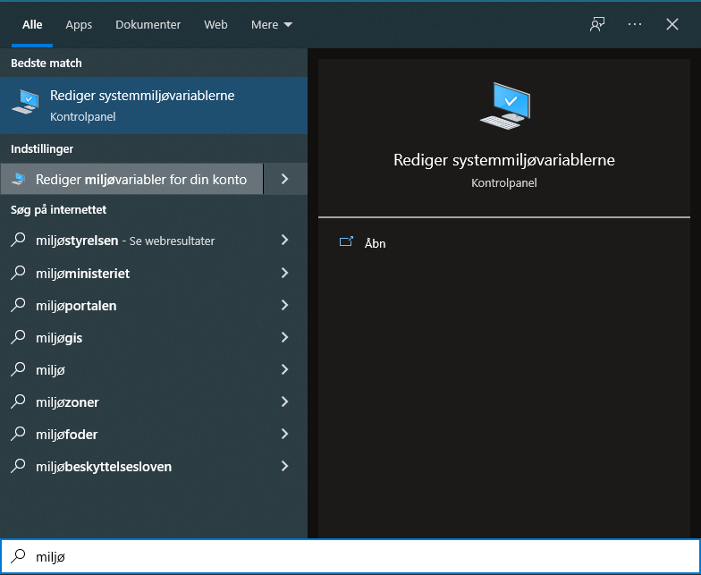
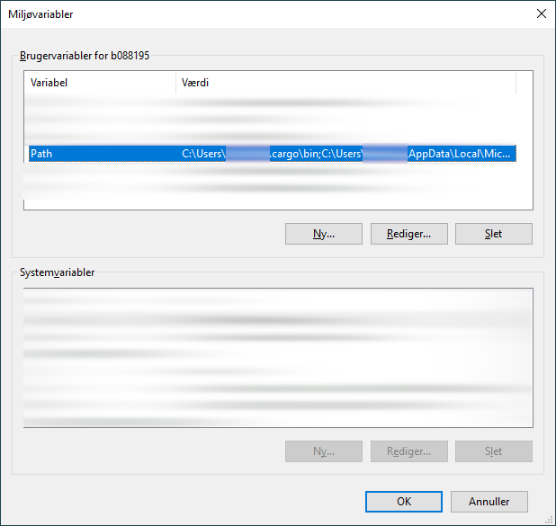
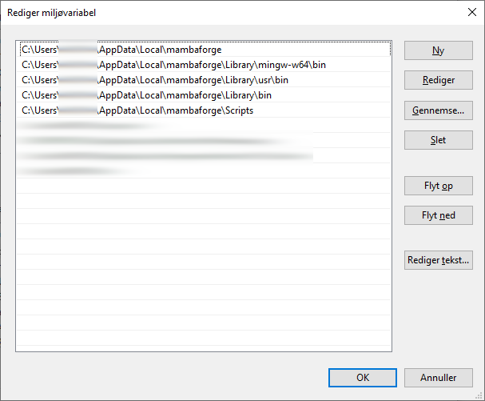

Python kan installeres på mange forskellige måder. Erfaringsmæssigt har det vist
sig at være fordelagtigt at undgå den officielle distribution fra The Python
Software Foundation og i stedet bruge en tredjeparts distribution som fx
Anaconda. Anaconda er et bredt anvendt rammeværk der gør det muligt at
arbejde med mange forskellige isolerede udviklingsmiljøer. Grundet forskellige
licensforhold er Anaconda ikke egnet til brug i SDFI, hvorfor vi i stedet
anbefaler at bruge Mamba, der er et frit og åbent alternativ til Anaconda.
MambaForge er som udgangspunkt sat op til kun at hente pakker fra kanalen
conda-forge, som er en organisation af stabile og opdaterede versioner af en
lang række pakker til en bred modtagergruppe. (Læs mere her: Why conda-forge?.)
Herunder beskrives installationen af Mamba og de vigtigste funktioner i Mamba
demonstreres.
Installationen af Mamba er i store træk ukompliceret og installeres som de
fleste andre programmer på Windows. For de fleste vil noter beskrevet i
afsnittet Hurtigruten være tilstrækkeligt, men en mere grundig vejledning
er også at finde herunder i afsnittet Den fulde vejledning.
Kør installationsprogrammet og gennemgå de enkelte skridt med følgende
valgmuligheder:
Installér »just for me«
Placere filerne under C:\Users\<brugernavn>\AppData\Local\mambaforge
»Register Mambaforge as my default Python«
Tilvælg »Add MambaForge to my PATH environment variable«
»Clear the package cache upon completion«
Med tilføjelsen af stien til MambaForge til din lokale PATH miljø-variabel,
kan du fremover i en shell-terminal og i dit integrerede udviklingsmiljø bruge
kommandoen mamba uden at angive den komplette sti til programmet.
Edge-browseren forhindrer i mange tilfælde brugeren fra at downloade installationsprogrammet.
Typisk løses problemet ved at bruge en anden browser, fx Firefox.
Vælg installationstype. Ved at vælge »Just for me« her, installerer
vi programmet under den aktuelle bruger og undgår derved at skulle
taste en administratoradgangskode
Sidste skridt i installationen er at tage stilling til avancerede
indstillinger. Vi følger de anbefalede valgmuligheder bortset fra,
at vi gerne vil kunne tilgå mamba fra enhver terminal, herunder
også i en IDE som VS Code. Sæt derfor følgende og lad resten være
som det var i udgangspunktet:
Tilføj MambaForge-stier til din brugers lokale PATH-miljøvariabel
Registrér Mambaforge som default Python installation
Ryd cache efter installation
Miljøvariablen PATH kan tilpasses senere, hvis det er nødvendigt
at rette eller slette stierne. Se nedenfor,
hvordan dette gøres.
Brug af Python via Mambaforge sker som udgangspunkt i den medfølgende
terminal, der går under navnet »Miniforge Prompt (mambaforge)«. Find den
i Windows‹ startmenu.
Når prompten åbnes mødes du af et terminalvindue med følgende indhold:
(base) C:\>
hvilket indikerer at du arbejder i Mambas standardmiljø base. Det anbefales
aldrig at bruge dette og i stedet oprette dedikerede miljøer til hvert enkelt
projekt der arbejdes på. Denne webside er eksempelvis skabt i et miljø der
hedder sdfipython, der er oprettet med kommandoen mambacreate:
Med Mamba kan du bruge conda kommandoen ligesom i Anaconda, da den
fungerer som et alias for kommandoen mamba. De to applikationer er tæt
relaterede og der vil ofte bliver foreslået brug af conda i de tekster
programmet selv skriver i terminalen.
Med disse stier sat kan du nu aktivere miljøer i en ny terminal,
eksempelvis cmd.exe, og en IDE som Visual Studio Code kan sende
aktiveringskommandoen for et givet miljø i de nye terminal-vinduer,
du åbner igennem programmet (PowerShell, CMD, Git Bash, CMDer, etc.).
Fordelen ved dette er altså, at mamba og andre programmer, der ligger
på disse placeringer, nu er tilgængelige for alle terminaler, herunder
også dén terminal, du bruger i dit integrerede udviklingsmiljø.
Ønsker du at rette eller fjerne disse stier igen, kan du tilgå dine
miljøvariable på følgende måde:
Åbn kontrolpanel-funktionen »Rediger miljøvariabler for din konto«
fra Windows-startmenu:

Fremsøg dialog-vindue til at ændre miljø-variable for brugerkontoen.¶
Vælg redigér Path [sic]:

Oversigt over miljø-variable for brugeren og på tværs af brugere [systemvariable].¶
Se, ret eller fjern de stier, du ønsker:

Tilføjede stier til PATH, som er nødvendige for, at shell og IDE kender stien til mamba.¶